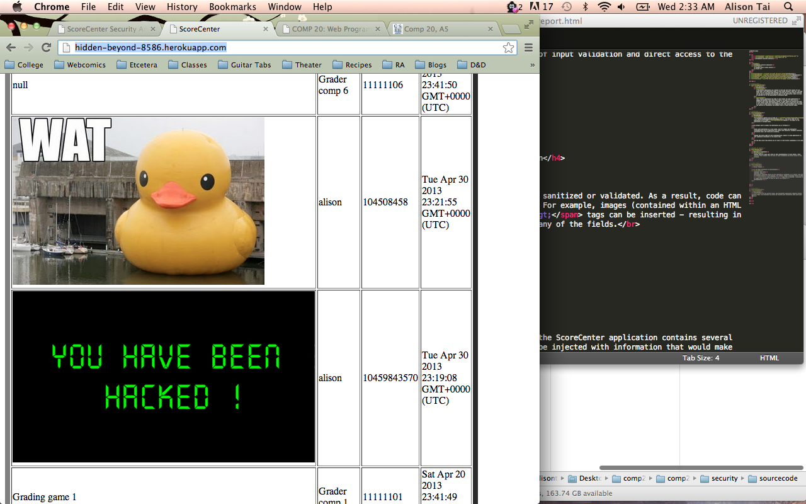
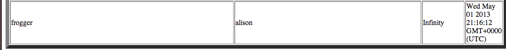
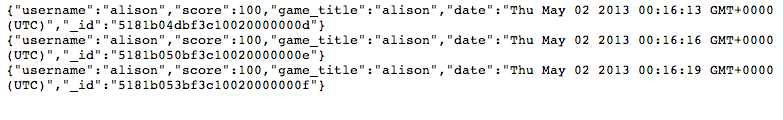

of Solomon Kreva's Score Center by Alison Tai
A ScoreCenter application was created to hold and sort high scores for any given game. This application takes in high scores through a POST API. The high score list for any given game through a GET API and all high scores submitted can be seen by accessing the home web page of the application. Users can also be searched for on the application's usersearch page.
This flexible application has made it much easier for game applications to manage and maintain their high score charts. In order for this to be an effective high score application, though, it must always be accurate and easy to use. Before using this application, the owner wants to make sure that there is no way for high scores to be tampered with. This consultation will evaluate the security of ScoreCenter and propose fixes to found security leaks.
The ScoreCenter website can be found at http://hidden-beyond-8586.herokuapp.com/. The source code for the application can be found here. The owner of the application is Solomon Kreva.
The process used to assess the application was as follows:
Several security flaws were found in this implementation of Score Center. These security flaws stemmed from the lack of input validation and direct access to the database.
Location: POST API, Usersearch Severity: HIGH - Could render pages of the application useless. Description: Submitted scores are not sanitized or validated. As a result, code can be injected directly to the database. For example, images (contained within an HTML <img src="src"> tags can be inserted - resulting in an image being displayed in place of any of the fields. This vulnerability also allows for cross-site scripting. Any scripts that are posted which could result in infinite loops of alert messages or anything from the miriad of destruction that a script can cause.  Recommendation: There are several ways to sanitize input. The simplest way would be to process all entries as text - thus disallowing any scripting or HTML tags to be posted to the page as anything but the string versions of their contents. Messages could also be sanitzed by stripping them of tags, replacing their special characters, or rejecting any posts with any special characters in them.
Location: entire application Severity: MEDIUM - You cannot trust all clients, but also fixes to the higher severity items could render this issue as less important. Description: Through examination of the source code, it can be seen that the Access-Control-Allow-Origin header is using the wildcard ('*'). This is seen here:
app.all('/', function(req, res, next) { res.header("Access-Control-Allow-Origin", "*"); res.header("Access-Control-Allow-Headers", "X-Requested-With"); next(); });
This is a bad programming practice because if the wildcard ('*') is used, then code from any website can access the content. As a result, any website has access to inject whatever it so pleases into the ScoreCenter. Recommendation: In order to alleviate this issue, a set list of applications/websites that are allowed access to the ScoreCenter application should be compiled. A process for becoming a validated user of the application will have to be put in place. Users can then be issued API keys that allow for validation.
Location: POST API Severity: MEDIUM - There shouldn't be games with scores that approach infinity, but this may be a problem. Description: There is no limit on the amount of text allowed within a field sent to the POST API. Therefore, users can insert as much data as they want into a field. This could overload the database, cause data to generally be incorrect, or bring down the entire application.  Recommendation: Only allow for a certain number of characters in the input to the POST API. Any input that contains more than the allotted amount will be rejected - this can be shown in an error message in the returned JSON.
Location: Home Page Severity: LOW - This may be considered a feature of the application, but could also be a flaw. Description: Since there is data on this website that is easily viewed or extracted, then anyone can take the data compiled by the application. While this may be desired for some uses, it can also be dangerous. If the application is ever expanded to incorporate real names or any other pieces of private information, then this would become a problem. Recommendation: This can be very easily solved by not displaying all of the scores or information in the application on a given page.
Location: POST API Severity: LOW - It's unlikely that users will be able to get the same exact score more than once. If the previous issues are resolved, then this shouldn't be a particularly malicious issue. Description: If a user gets the same score more than once for any game, it is still inputted into the database. While this isn't a huge security risk, it can inundate the leaderboards with poor data. If, for instance, someone gets the same score ten times then their name will be on the top ten high score list for every single post. There is no opportunity for anyone else. If the previous issues have not been corrected, it is even likely that multiple submissions of the same score is a malicious attempt at rendering the leaderboard useless.  Recommendation: Search the database first to see if there is an identical entry. If there is, reject or ignore the post..
In its current state, the ScoreCenter application contains several security flaws. The interface can easily be injected with information that would make render the application useless and is at the mercy of anyone who wants to use it. Many of the security vulnerabilities are blatant and urgent. In the interest of the future, the given issues should be fixed before putting the code into production if possible. Any issue marked with a severity of "HIGH" should be fixed as soon as possible. For any amount of money, you can probably find a poor college student who would love to work with this application. We suggest reaching out to students who have taken Ming Chow's Web Programming and Web Security classes at Tufts University.